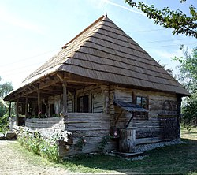

Casa memorială Constantin Brâncuși

Casa memorială Constantin Brâncuși este un muzeu județean care se află în localitatea Hobița, din comuna Peștișani, județul Gorj. Este clasificată ca monument istoric, sub denumirea de Casa-Muzeu „Constantin Brâncuși”.
Din pridvor se intră în cele trei încăperi ale casei: odaia de dormit, cunia și celarul. Cunia e bucătăria, locul unde era vatra cu corlată, unde se gătea mâncarea și unde se adunau la masă toți ai casei. Celarul e cămara și e singura încăpere care nu are tavanul drept.
Casa este compusă din două odăi (vatră, sobă) și o cămară. Îmbinările bârnelor sunt ascunse sub undrelele decorate pe motivul „frânghiei” și al „dintelui de lup”. În torsadă sunt sculptați stâlpii prispei, fie pe toată înălțimea fie în două registre separate prin inele în zigzag. Ușa cămării reprezintă un tip tradițional, nu numai pentru sudul munților, dar și pentru sate transilvănene.
Este monument de arhitectură populară de la sfârșitul secolului al XIX-lea și a fost restaurată în 1971, la înființarea muzeului. Colecția muzeului cuprinde fotografii, albume, documente, cărți, scrisori care reflectă momente din viața și activitatea lui Constantin Brâncuși. Este prezentat mobilier original de interior țărănesc de la începutul secolului al XX-lea.